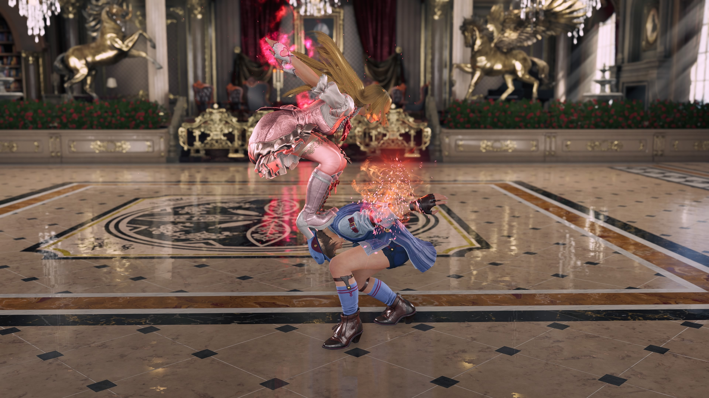

Rabbit Song: An twirl that evades to the left and follows up with an attack

Black Swan: A Ballerina style double Roundhouse kick that can't be evaded

You're opponent is Asuka Kazama, Jin's distant cousin and Lili's long heated rival. What move would you start off with?
Rabbit Song: An twirl that evades to the left and follows up with an attack
Black Swan: A Ballerina style double Roundhouse kick that can't be evaded
